22 สมุนไพรไทยเสี่ยงสูญพันธ์
นายนันทศักดิ์ โชติชนะเดชาวงศ์ ผู้อำนวยการกองคุ้มครองภูมิปัญญาการแพทย์แผนไทยและพื้นบ้านไทย กรมพัฒนาการแพทย์แผนไทยและการแพทย์ทางเลือก กระทรวงสาธารณสุข (สธ.) กล่าวว่า ขณะนี้มีสมุนไพรไทย 22 ชนิด ที่เสี่ยงอาจจะสูญพันธุ์ได้ ประกอบด้วย 1. ถั่วดินโคก 2. เทพทาโร 3. มะตูมนิ่ม 4. มะหาด 5. เร่ว 6. หัวร้อยรู 7. กระทุ่มนา 8. ขันทองพยาบาท 9. จุกโรหินี 10. ชะเอมไทย 11. ชิงชี่ 12. ตับเต่า 13. นางแย้มป่า 14. ปลาไหลเผือก 15. พังคี 16. มะคังแดง 17. สะค้าน 18. สารภีป่า
19. อบเชยไทย 20. เฉียงพร้านางแอ 21. เถาเอ็นอ่อน และ 22. เปราะหอม
1. ถั่วดินโคก
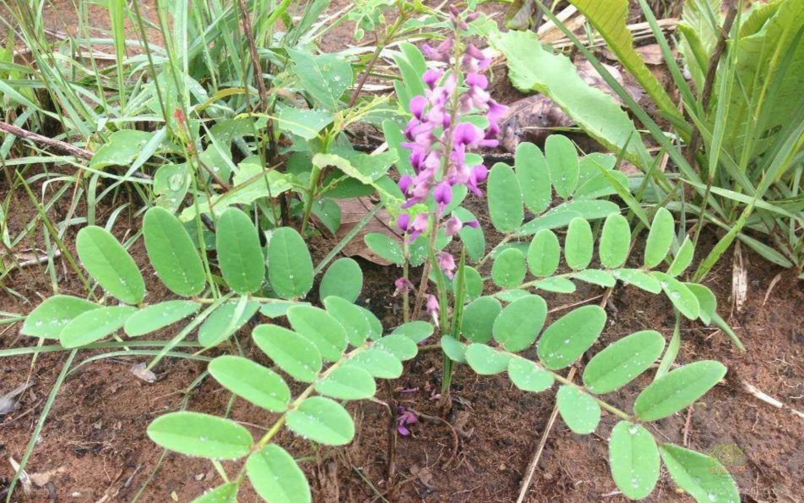
ชื่ออื่นๆ :
แผ่นดินเย็น (อุบลราชธานี) นมราชสีห์ นมฤาษี ถั่วดินโคก
ชื่อวิทยาศาสตร์ :
Sophora exigua Craib
ลักษณะทางพฤกษศาสตร์
ไม้พุ่มขนาดเล็ก สูง 15-30 เซนติเมตร ลำต้นสั้นมาก ใบประกอบแบบขนนก เรียงสลับ แนบกับพื้นดินเป็นแนวรัศมี ใบย่อย 9-13 ใบ รูปวงรี รูปไข่หรือรูปขอบขนานแกมวงรี ใบย่อยปลายใบรูปไข่กลับ กว้าง 1.5-3 เซนติเมตร ยาว 2-5 เซนติเมตร ผิวใบมีขนละเอียดสีขาว ดอกช่อกระจะ ออกที่ปลายยอด ดอกย่อยจำนวนมาก
กลีบดอกรูปดอกถั่ว สีม่วงเข้ม ก้านช่อดอกยาว ผลเป็นฝักรูปขอบขนาน มีขนละเอียดสีขาว มีเมล็ดเดียว
สรรพคุณ
ยาสมุนไพรพื้นบ้านจังหวัดอุบลราชธานี ใช้ ราก ฝนกับน้ำดื่ม ช่วยลดไข้ในเด็ก ฝนทาแก้พิษงู(ต้องว่าคาถาด้วย) ต้มน้ำดื่ม บำรุงน้ำนม (กินมากไม่ดี) ราก เหง้า ลำต้น ใบ ฝนทาฝี
ยาพื้นบ้านอีสาน ใช้ ราก ฝนน้ำทา แก้ฝี
2. เทพทาโร
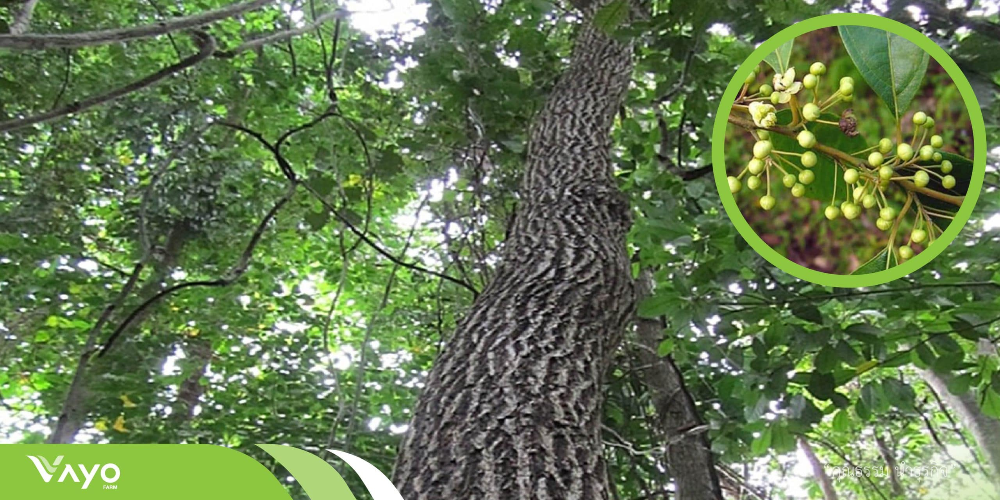
ชื่ออื่นๆ :
การบูร จะไคหอม จะไคต้น จวงหอม จวง พลูต้นขาว มือแดกะมางิง
ชื่อวิทยาศาสตร์ :
Cinnamomum porrectum Kosterm, Cinnamomum parthenoxylon Meissn
และ Cinnamomum glanduliferum Nees
ลักษณะทางพฤกษศาสตร์
เทพทาโรจัดเป็นไม้ยืนต้นขนาดกลางถึงใหญ่ สูง 10-30 เมตร ไม่ผลัดใบหรือผลัดใบระยะสั้น เรือนยอดสีเขียวเข้มโปร่งถึงเป็นพุ่มกลมทึบลำต้นเรียบไม่มีพูพอน
เปลือกต้นสีเทาอมเขียว หรือเทาอมน้ำตาล แตก เป็นร่องตามยาวลำต้น เมื่อถากเปลือกออกเปลือกชั้นในมีสีน้ำตาลอมแดง มีกลิ่นหอมคล้ายการบูร กิ่งมีลักษณะอ่อนเรียว เกลี้ยง และมักมีคราบขาวเนื้อไม้มีสีเทาแกมน้ำตาล
มีกลิ่นหอมฉุน มีริ้วสีเขียวแกมเหลือง เนื้อไม้เป็นมันเสื่อม เสี้ยนตรง หรือสับสน ดอกออกเป็นช่อ สีขาวหรือเหลืองอ่อน มีกลิ่นหอม ผลมีขนาดเล็กและกลม ขนาดเส้นผ่าศูนย์กลางประมาณ 7 มม. ผลอ่อนมีสีเขียว ผลแก่มีสีม่วงดำ
สรรพคุณ
ใบ เรียกว่า ใบกระจาน ใช้ทำเครื่องเทศ ขับลม บำรุงธาตุ แก้ท้องอืดท้องเฟ้อ
เนื้อไม้ แก้ลมจุกเสียด แน่นเฟ้อ ขับลมในกระเพาะอาหารและลำไส้ แก้ปวดท้อง
มีสารสำคัญในเนื้อไม้ คือ d - camphor ที่ใช้แทน sassafras ได้ดีให้น้ำมันที่มีสารหอม คือ safrol และ cinnamic aldehyde และยังพบ safrol ในเปลือกต้นและใบ
3. มะตูมนิ่ม
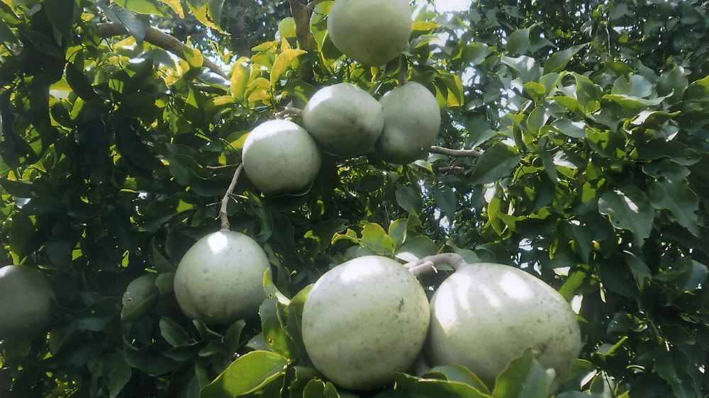
ชื่ออื่นๆ :
มะปิน (ภาคเหนือ) กะทันตาเถร ตุ่มตัง ตูม (ปัตตานี) มะปีส่า (แม่ฮ่องสอน) พะโนงค์
ชื่อวิทยาศาสตร์ :
Aegle marmelos (L.) Correa
ลักษณะทางพฤกษศาสตร์
ไม้ยืนต้นขนาดเล็กถึงขนาดกลาง ผลัดใบ สูง 10-15 เมตร เรือนยอดรูปไข่ เปลือกต้นสีเทาเรียบหรือแตกเป็นร่องตื้นๆตามยาว เนื้อไม้แข็ง มีสีขาวแกมเหลือง และมีกลิ่นหอม โคนต้นและกิ่งก้านมีหนามแหลม
ยาว แข็ง ใบเป็นใบประกอบแบบมีใบย่อย 3 ใบ ออกเรียงสลับ ใบรูปไข่ กว้าง 1-7 เซนติเมตร ยาว 4-13 เซนติเมตร ใบอ่อนสีเขียวอ่อนหรือสีชมพู มีขนละเอียด ดอก
ออกเป็นช่อตามซอกใบและปลายกิ่ง ออกรวมกันเป็นช่อสั้นๆ ดอกสีขาวอมเขียวหรือสีเหลืองอ่อน ขนาด 1.5-2 เซนติเมตร ดอกมักออกพร้อมกับใบอ่อน มีกลิ่นหอม ผล รูปรีกลมหรือรียาว ขนาดกว้าง 8-10 เซนติเมตร ยาวประมาณ 12-18 เซนติเมตร ผิวเรียบเกลี้ยง
เปลือกหนา แข็งมาก ไม่แตก ผลอ่อนมีสีเขียวพอสุกมีสีเหลือง เนื้อผลมีสีเหลือง นิ่ม มีกลิ่นหอม
สรรพคุณ
ผล รสฝาด หวานชุ่ม เป็นยาเย็น ออกฤทธิ์ต่อกระเพาะและลำไส้ ใช้เป็นยาแก้ท้องเดิน ท้องเสียเรื้อรัง แก้บิดมูกเลือด บิดเรื้อรัง บำรุงธาตุ เจริญอาหาร แก้เจ็บคอ คออักเสบ ใบสด รสฝาดมัน คั้นน้ำกินแก้หลอดลมอักเสบ แก้บวม แก้หวัด
แก้ผดผื่นคัน แก้ตาบวม แก้ตาอักเสบ เปลือกรากและลำต้น แก้ไข้จับสั่น ขับลมในลำไส้
4. มะหาด
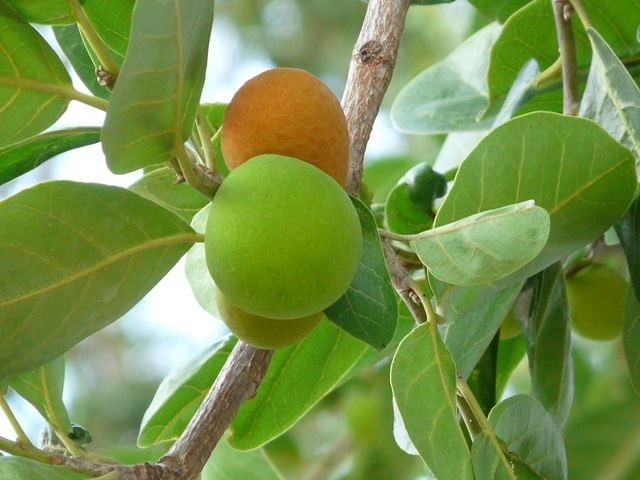
ชื่ออื่นๆ :
หาด (ทั่วไป) มะหาดใบใหญ่ (ตรัง) หาดขนุน ปวกหาด (เหนือ) ขนุนป่า
ชื่อวิทยาศาสตร์ :
Artocarpus lakoocha Roxb
ลักษณะทางพฤกษศาสตร์
ไม้ยืนต้นขนาดใหญ่ สูง 15-25 เมตร ไม่ผลัดใบ ทรงพุ่มกลม ลำต้นเปลาตรง เปลือกต้นสีน้ำตาลอมแดงถึงน้ำตาลเข้ม ยอดอ่อนมีขนสีน้ำตาลออกแดงหนาแน่น มีน้ำยางสีขาว ใบ เดี่ยวเรียงแบบสลับระนาบเดียว
รูปไข่หรือรูปขอบขนาน ปลายใบมน กิ่งก้านค่อนข้างอ่อน อ้วน หนา 3-6 มิลลิเมตร ไม่มีรอยแผลวงแหวน ดอกเป็นช่อกลมแน่นสีเหลืองหม่นถึงชมพูอ่อนแบบช่อกระจุก ดอกแยกเพศร่วมต้น ผลสดมีเนื้อ เป็นผลรวมรูปร่างบิดเบี้ยว ขนาดเส้นผ่านศูนย์กลาง 2.5-8 ซม.
ก้านผลยาว 1.2-3.8 ซม.สีเหลืองอ่อน หรือส้ม ผลแก่สีเหลืองปนน้ำตาล รูปร่างบิดเบี้ยวเป็นตะปุ่มตะป่ำ มีเมล็ดรูปขอบขนาน หรือเกือบกลม สีน้ำตาลเทา จำนวนมาก ขนาด 1.2 ซม.
สรรพคุณ
ตำรายาไทย ผงจากแก่น โดยนำแก่นไม้ที่อายุ 5 ปีขึ้นไปนำมาทำเป็นยาขับพยาธิตัวตืดและพยาธิไส้เดือน หรือใช้ละลายน้ำ ทาแก้ผื่นคัน แก่น รสร้อน ขับพยาธิตัวตืด แก้ลม แก้ท้องอืดเฟ้อ ราก แก้ไข้ ขับพิษร้อนใน ขับพยาธิ แก้กษัยในเส้นเอ็น
เปลือกต้น รสฝาด ใช้เคี้ยวกับหมากแทนสีเสียด เปลือกต้นสด สมาน ทาขับพยาธิ ต้มกินแก้ไข้ ขับพยาธิ ผลสุก รับประทานได้ รสหวานอมเปรี้ยว
5. เร่ว
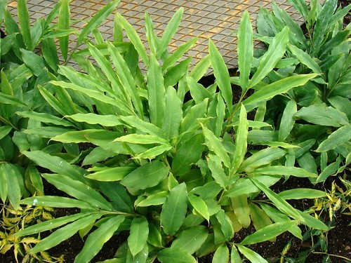
ชื่ออื่นๆ :
เร่วดง (ตราด) ผาลา (ฉาน เชียงใหม่) มะหมากอี มะอี้ (เชียงใหม่) เร่ว (ภาคกลาง)
เร่วใหญ่ (มีชื่ออื่น ๆ ได้แก่ เร่ว มะอี้ หมากอี้ หมากเน็ง หมากแหน่ง-อีสาน เร่วกระวาน กระวานป่า)
ชื่อวิทยาศาสตร์ :
Amomum villosum Lour , Amomum xanthioides Wall
ลักษณะทางพฤกษศาสตร์
เร่วน้อย ผลค่อนข้างกลม ลักษณะเป็น 3 พู ขนาดเส้นผ่านศูนย์กลางประมาณ 1.0-1.5 เซนติเมตร ยาวประมาณ 1.5-2 เซนติเมตร มีขน ผลแก่สีน้ำตาลแดง มีเมล็ดจำนวนมากจับกันเป็นกลุ่มก้อนกลม หรือกลมรี มี 3 พู แต่ละพูมีเมล็ด 3-15 เมล็ด
อยู่เรียงแน่น 3-4 แถว เมล็ดรูปร่างไม่แน่นอน มีหลายเหลี่ยมและเป็นสันนูน กว้าง 2-3 มม. ยาว 2.5-4 มม. สีน้ำตาลเข้มหรือสีน้ำตาลดำ ผิวนอกเรียบมีเยื่อบางหุ้ม ปลายแหลมของเมล็ดมีรูเห็นเด่นชัด เมล็ดแข็ง เนื้อในเมล็ดสีขาวอมเหลือง กลิ่นหอมฉุน รสเผ็ดซ่าและขมเล็กน้อย
เร่วใหญ่ ผลเรียวยาวหรือขอบขนานแกมสามเหลี่ยม ขนาดเส้นผ่านศูนย์กลางประมาณ 2 ซม. มีขนอ่อนสีน้ำตาลแดงปกคลุม ภายในมีเมล็ดเป็นกลุ่ม 10-20 เมล็ด ลักษณะเหมือนเร่วน้อย ผลมีรสมันเฝื่อนติดเปรี้ยว เมล็ด รสร้อนเผ็ดปร่า
สรรพคุณ
ผลเร่วน้อย รสร้อนเผ็ดปร่า แก้ไข้ แก้ริดสีดวง แก้หืดไอ เสมหะ แก้ระดูขาว แก้ไข้สันนิบาต เมล็ดเร่วน้อย รสร้อนเผ็ดปร่า ขับลมในลำไส้ แก้ท้องขึ้น อืดเฟ้อ ปวดท้อง แก้คลื่นเหียน อาเจียน แก้ริดสีดวง หืดไอ กัดเสมหะ แก้ไข้สันนิบาต ขับน้ำนม
ผลเร่วใหญ่ รสมันเฝื่อนติดเปรี้ยว แก้ไข้เพื่อดีและเสมหะ แก้ริดสีดวงทวารทั้ง 9 รักษาอาการขัดในทรวง บรรเทาอาการกระหายน้ำ แก้ธาตุพิการ แก้ท้องอืดเฟ้อจุกเสียด
6. หัวร้อยรู
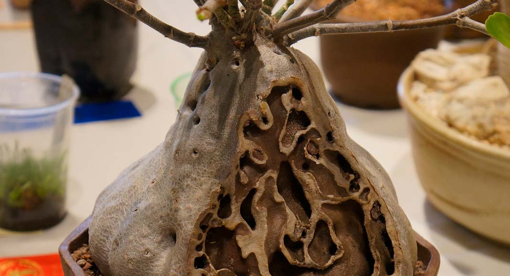
ชื่ออื่นๆ :
กระเช้าผีมด (สุราษฎร์ธานี) ดาลูปูตาลิมา (มลายู-ภาคใต้) ปุมเป้า (ตราด) ร้อยรู (ปัตตานี)
หัวร้อยรู (ภาคกลาง)
ชื่อวิทยาศาสตร์ :
Hydnophytum formicarium Jack
ลักษณะทางพฤกษศาสตร์
หัวร้อยรู จัดเป็นพืชจำพวกหัว เป็นไม้ที่อิงอาศัยเกาะอยู่ตามต้นไม้อื่น หรือเรียกว่าไม้กาฝาก ลำต้นสูง 30-60 เซนติเมตร
โคนต้นขยายใหญ่เป็นรูปกลมป้อมหรือเป็นพู มีลำต้นอวบน้ำ ที่โคนต้นโป่งพอง ต้นแก่จะมีหัวกลมโตขนาดเท่าลูกมะพร้าวห้าว ภายในหัวจะเป็นรูย้อนขึ้นและย้อนลง พรุนไปทั่วหัว เมื่อผ่าออกดูมักจะมีมดดำอาศัยอยู่ภายในหัว
เนื้อนิ่ม มีสีน้ำตาลไหม้ หัวมีรสเมา หัวร้อยรูมักขึ้นตามคาคบไม้ ขยายพันธุ์ด้วยวิธีการใช้เมล็ดและวิธีการแยกกอ สามารถเจริญเติบโตได้ดีในดินร่วน เป็นพืชที่ชอบความชื้นมากและแสงแดดปานกลาง
สรรพคุณ
ตำรายาไทย : หัวบำรุงหัวใจ ขับชีพจร ขับพยาธิ แก้พิษในข้อในกระดูก แก้พิษประดง แก้ข้อเข่าข้อเท้าบวม รักษามะเร็ง
หัวร้อยรู จัดอยู่ใน “พิกัดมหากาฬทั้ง 5” คือการจำกัดตัวยารักษากาฬ 5 อย่างมี หัวถั่วพู หัวกระเช้าผีมด หัวร้อยรู มหากาฬนกยูง มหากาฬใหญ่ สรรพคุณ ดับพิษร้อน ถอนพิษไข้ แก้พิษอักเสบ ช้ำบวม แก้พิษไข้ ไข้กาฬ ประดงผื่นคัน น้ำเหลืองเสีย
7. กระทุ่มนา
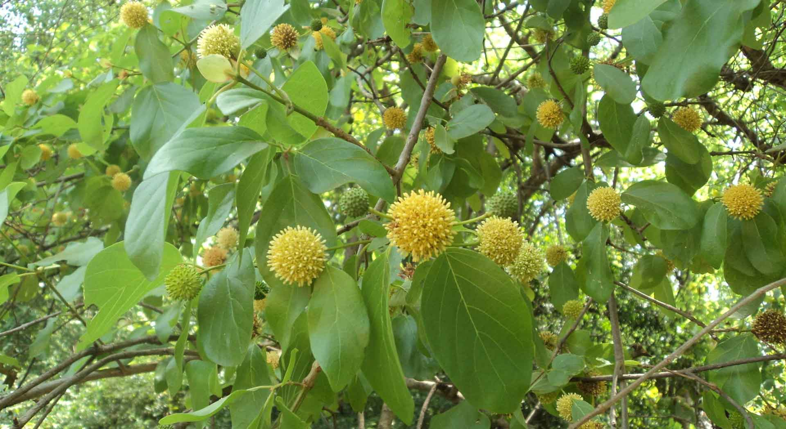
ชื่ออื่นๆ :
กระทุ่มดง (กาญจนบุรี) กระทุ่มนา กระทุ่มน้ำ (กลาง) กาตูม (เขมร-ปราจีนบุรี)
ตำ (เขมร-สุรินทร์) ตุ้มแซะ ตุ้มน้อย ตุ้มน้ำ (เหนือ) ถ่มพาย (เลย) ท่อมขี้หมู (สงขลา)
ชื่อวิทยาศาสตร์ :
Mitragyna diversifolia Wall. Ex. G. Don
ลักษณะทางพฤกษศาสตร์
จัดเป็นพรรณไม้ต้นผลัดใบขนาดกลาง เป็นทรงพุ่มกลม มีความสูงได้ประมาณ 8-15 เมตร แตกกิ่งแขนงต่ำ ลำต้นคดหรือเปลาตรง
เปลือกลำต้นด้านนอกเป็นสีเทา ใบเป็นใบเดี่ยว ออกเรียงตรงข้ามเวียนสลับตั้งฉากกัน ลักษณะของใบเป็นรูปไข่ รูปขอบขนาน รูปรี หรือรูปรีค่อนข้างกลม ปลายใบมน โคนใบมนหรือเว้าเล็กน้อย ส่วนขอบใบเรียบ
ออกดอกเป็นช่อกระจุกซ้อน 3 ชั้น ระนาบเดียวกัน สลับกับตรงข้าม โดยจะออกตามซอกใบ ผลมีลักษณะรูปทรงกลมหรือรูปไข่ขนาดเล็ก ผิวผลขรุขระ แข็ง อัดรวมกันเป็นก้อนกลม
สรรพคุณ
ใบมีรสขมเฝื่อนเมา มีสรรพคุณช่วยลดความดันโลหิตและออกฤทธิ์กดต่อประสาทและกล้ามเนื้อ ยาแผนโบราณของไทยจะใช้ใบกระทุ่มนา (แทนใบกระท่อม) เป็นยาแก้ท้องร่วง ปวดมวนท้อง
ซึ่งมีฤทธิ์เหมือนใบกระท่อม แต่อ่อนกว่า สามารถนำมาใช้แทนกันได้ เปลือกต้นและใบใช้เป็นยาแก้บิดมูกเลือด เปลือกต้นมีรสฝาดร้อน ใช้เป็นยารักษาโรคผิวหนังทุกชนิด แก้มะเร็งคุดทะราด
8. ขันทองพยาบาท
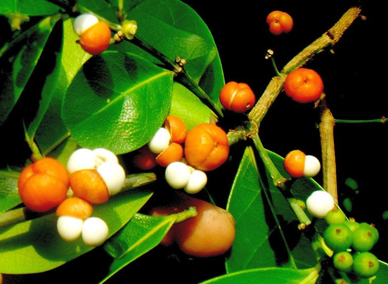
ชื่อสมุนไพร :
ขันทองพยาบาท
ชื่ออื่นๆ :
ดูกใส (อีสาน) ยางปลอก ยายปลวก ฮ่อสะพานควาย (แพร่ น่าน) ขันทองพยาบาท (ภาคกลาง)
ดูกหิน (สระบุรี) ข้าวตาก (กาญจนบุรี)
ชื่อวิทยาศาสตร์ :
Suregada multiflora (A.Juss) Baill
ลักษณะทางพฤกษศาสตร์
ไม้ยืนต้นขนาดกลาง สูง 7-13 เมตร ทรงพุ่มแน่นทึบ ลำต้นตรง กิ่งก้านอ่อน กิ่งห้อยลง กิ่งมีขนรูปดาว เปลือกต้นสีน้ำตาลแก่ ใบ เป็นใบเดี่ยว เรียงสลับ รูปขอบขนานแกมรูปหอก
กว้าง 3-8 เซนติเมตร ยาว 9-22 เซนติเมตร เนื้อใบหนาทึบ เหนียว หลังใบเรียบลื่นเป็นมัน ดอกสีเขียวอมเหลืองอ่อน ออกเป็นช่อสั้นๆ ตรงซอกใบ ขนาด 0.8-1 ซม. กลิ่นหอม ช่อละ 5-10 ดอก
ผลเกือบกลม ผิวเกลี้ยง ขนาด 2 เซนติเมตร ผลอ่อนสีเขียวเมื่อสุกมีสีเหลืองอมแสด แตกตามพู มี 3 พู มีติ่งเล็กๆที่ยอด เมล็ดค่อนข้างกลม หนึ่งผลมี 3 เมล็ด ขนาด 7-8 มิลลิเมตร สีน้ำตาลเข้ม มีเนื้อบางๆสีขาว
สรรพคุณ
ราก รสเมาเบื่อร้อน แก้ลม แก้ประดง แก้พิษในกระดูก แก้โรคผิวหนัง เปลือกต้น รสเมาเบื่อ แก้โรคตับพิการ แก้ปอดพิการ แก้ลมเป็นพิษ เนื้อไม้ รสเมาเบื่อ แก้กามโรค แก้น้ำเหลืองเสีย แก้ไข้ แก้โรคผิวหนัง
แก้มะเร็งคุดทะราด
9. จุกโรหินี
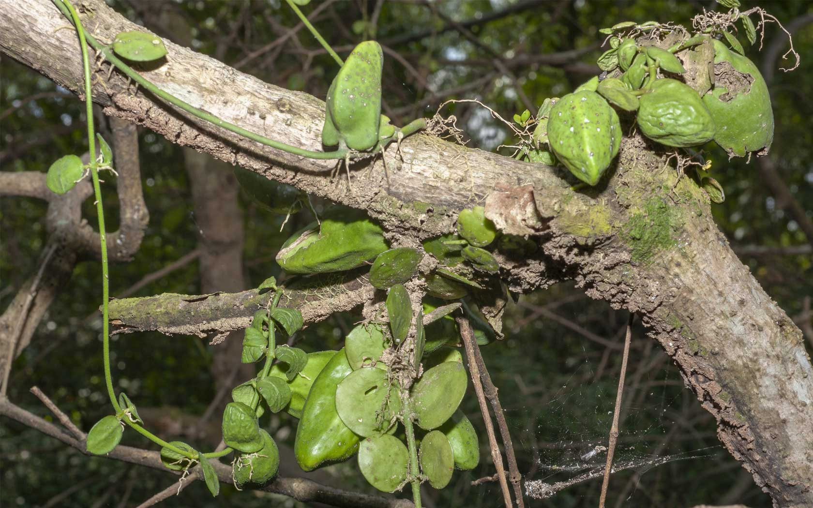
ชื่ออื่นๆ :
กล้วยไม้ โกฐพุงปลา พุงปลาช่อน เถาพุงปลา นมตำไร บวบลม
ชื่อวิทยาศาสตร์ :
Dischidia major (Vahl) Merr
ชื่อวงศ์ :
Asclepiadaceae
ลักษณะทางพฤกษศาสตร์
จัดเป็นไม้ล้มลุกที่มีลำต้นเลื้อยทอดไปตามต้นไม้ เถากลมสีเขียว ตามข้อเถามีรากงอกออก มีไว้สำหรับใช้ยึดเกาะ ใบเป็นใบเดี่ยว ออกตรงข้ามกันเป็นคู่ ๆ หรือออกเป็นใบเดี่ยว ใบมี 2 แบบ ลักษณะแตกต่างกันมาก ซึ่งจะอยู่บนต้นเดียวกัน คือ
แบบแรกมีลักษณะรูปร่างคล้ายถุงปากแคบ แบนเป็นเหลี่ยม ๆ ออกดอกเป็นช่อสั้น ๆ ขนาดเล็ก ช่อละประมาณ 6-8 ดอก โดยจะออกตามง่ามใบตรงข้ามกับใบ ออกผลเป็นฝัก ฝักเป็นสีเหลืองแกมสีส้ม ผิวของฝักมีลักษณะขรุขระ
สรรพคุณ
ต้น รสฝาดสุขุม ต้มน้ำดื่ม แก้ปวดท้อง ใบ รสฝาดสุขม ใช้เป็นยาฝาดสมาน แก้ท้องร่วง แก้ท้องเดิน ราก รสฝาดสุขุม แก้ท้องร่วง แก้อาเจียน แก้บิด แก้ปวดเบ่ง แก้เสมหะพิการ รากนำมาเคี้ยวกับพลู เป็นยาแก้ไอ
10. ชะเอมไทย
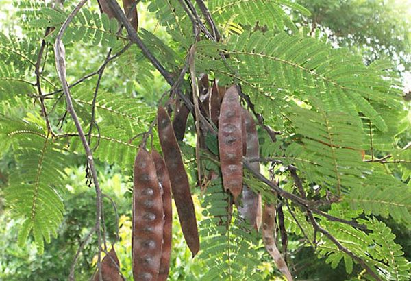
ชื่ออื่นๆ :
ชะเอมป่า(กลาง) ตาลอ้อย(ตราด) ส้มป่อยหวาน(พายัพ) อ้อยช้าง(สงขลา)
นราธิวาส อ้อยสามสวน (อุบลราชธานี)
ชื่อวิทยาศาสตร์ :
Albizia myriophylla Benth
ชื่อวงศ์ :
Leguminosae- Mimosaceae
ลักษณะทางพฤกษศาสตร์
ไม้เถายืนต้นขนาดกลาง สูง 5-8 เมตร มีหนามตามลำต้นและกิ่งก้าน เปลือกนอกสีน้ำตาลอมเทา ใบเล็กละเอียดเป็นฝอย เป็นใบประกอบแบบขนนก 2 ชั้น ใบย่อยเรียงตรงข้าม ใบย่อยรูปขอบขนาน มีขนที่ขอบใบ
ผิวค่อนข้างเกลี้ยงดอกออกเป็นช่อที่ปลายกิ่ง ช่อดอกแบบช่อแยกแขนง ลักษณะเป็นพู่ กลีบดอกสีขาว มีกลิ่นหอม ก้านช่อดอกยาว 1.3-2.3 ซม. มีขนยาวกระจายทั่วไป ผลเป็นฝัก แบน ปลายแหลม กว้าง 2.3-2.5 ซม. ยาว 7.2-15.2 ซม.
โคนและปลายแหลม มีเมล็ดนูนเห็นได้ชัด ผลอ่อนสีเขียว ผลแก่สีเหลืองถึงน้ำตาล เมล็ด กว้าง 4-6 มม. ยาว 5-8 มม. ตรงบริเวณที่มีเมล็ดจะมีรอยนูนเห็นชัด
สรรพคุณ
ยาสมุนไพรพื้นบ้านจังหวัดอุบลราชธานี ใช้ ลำต้น เข้ากับเครือไส้ไก่ เครือหมาว้อ เครือตากวง ต้มน้ำดื่ม แก้โรคตับ เปลือกต้น ต้มน้ำดื่ม แก้ไอ ราก ช่วยแก้กระหาย ยาระบาย เนื้อไม้ บรรเทาอาการเจ็บคอ
ตำรายาไทย ใช้ เนื้อไม้ มีรสหวาน แก้โรคในลำคอ แก้ลม แก้เลือดออกตามไรฟัน บำรุงธาตุและบำรุงกำลัง บำรุงกล้ามเนื้อให้เจริญ แก้ไอ ขับเสมหะ แก้น้ำลายเหนียว ต้น รสหวานเอียน ถ่ายลม แก้โรคในคอ ทำผิวหนังให้สดชื่น แก้โรคตา ราก มีรสหวาน ทำให้ชุ่มคอ แก้กระหายน้ำ
11. ชิงชี่
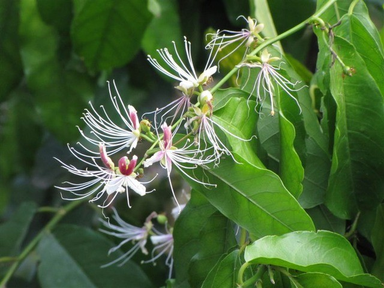
ชื่ออื่นๆ :
กระดาดป่า (ชลบุรี) ชายชู้ หมากมก (ชัยภูมิ) หนวดแมวแดง (เชียงใหม่) คายซู (อุบลราชธานี)
พญาจอมปลวก กระดาดขาว
ชื่อวิทยาศาสตร์ :
Capparis micracantha DC
ลักษณะทางพฤกษศาสตร์
ไม้พุ่มหรือกึ่งเลื้อย สูง 2-6 เมตร กิ่งก้านอ่อนมีสีเขียว ผิวเรียบเกลี้ยง กิ่งคดไปมา ใบเป็นใบเดี่ยว เรียงสลับ รูปขอบขนาน รูปรี หรือรูปไข่ กว้าง 3-15 เซนติเมตร ยาว 9.5-24 เซนติเมตร ปลายใบมนหรือแหลม
หรือเว้าเล็กน้อยแล้วเป็นติ่ง ดอกเดี่ยว ออกเรียงเป็นแถว 1-7 ดอก ตามซอกใบบริเวณปลายกิ่ง ออกเรียงอยู่เหนือง่ามใบ ก้านดอกยาว 1-2 เซนติเมตร กลีบรองกลีบดอก ผลสด ค่อนข้างกลมหรือรี มี 4 ร่องตามยาว ผิวผลเรียบ แข็งเป็นมัน
กว้าง 3-6.5 เซนติเมตร สีเขียวน้ำตาล เมื่อสุกสีเหลืองหรือแดง หรือดำ เนื้อรสหวานรับประทานได้ เมล็ดรูปไต สีแดงหรือดำ เป็นมัน อัดกันแน่นเป็นจำนวนมาก
สรรพคุณ
ตำรายาไทย ราก รสขมขื่น แก้โรคที่เกิดในท้อง ขับลมภายใน แก้ไข้ร้อนทุกชนิด ไข้พิษ แก้โรคตา โรคกระเพาะ รักษามะเร็ง ช่วยให้มดลูกเข้าอู่ และเป็นยาบำรุงหลังคลอดบุตร ทั้งต้น รสขื่นปร่า ตำพอกแก้ฟกช้ำ
บวม แก้ไข้ ขับน้ำเหลืองเสีย ใบ รสเฝื่อนเมา เข้ายาอาบ แก้โรคผิวหนัง รักษาประดง ดอก รสขื่นเมา แก้มะเร็ง ผลดิบ รสขื่นปร่า แก้โรคในลำคอ เจ็บคอ ลำคออักเสบ
12. ตับเต่า
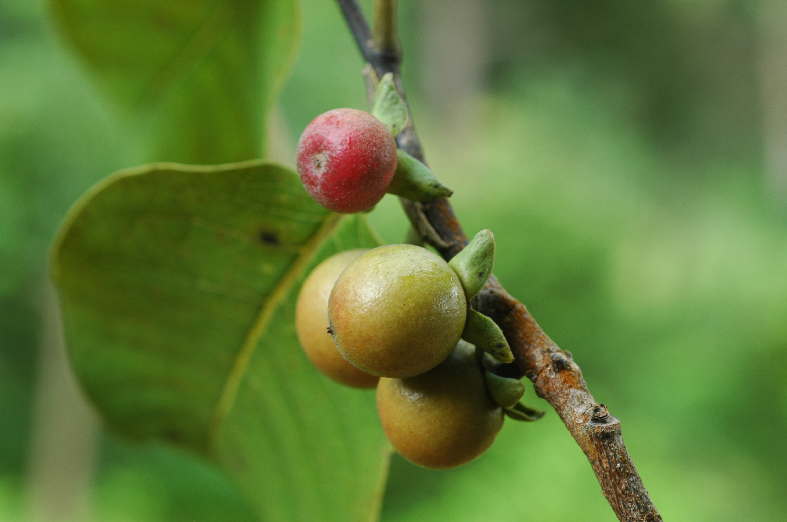
ชื่ออื่นๆ :
ตับเต่า, เฮื้อนกวาง, มะไฟผี, มะโกป่า (ภาคเหนือ), ตับเต่าใหญ่, เฮื้อนกวง
กากะลา (ภาคอีสาน)
ชื่อวิทยาศาสตร์ :
Diospyros ehrelioides Wall. Ex G. Don
ลักษณะทางพฤกษศาสตร์
ตับเต่าต้นจัดเป็นไม้ยืนต้นผลัดใบขนาดเล็กถึงขนาดกลาง ทรงพุ่มเป็นรูปกรวยโปร่ง ต้นสูงประมาณประมาณ 10-15 เมตร เปลือกต้นสีน้ำตาลปนเทาหรือสีเทาอมขาว
ใบออกเป็นใบเดี่ยวมีสีเขียว แบบออกเรียงสลับ มีลักษณะเป็นรูปขอบขนาน รูปวงรี ดอกเป็นแบบแยกเพศต่างต้นโดยดอกเพศผู้จะออกเป็นช่อหรือออกเป็นกระจุก บริเวณกิ่งเหนือง่ามใบ ผลออกเป็นผลสด
รูปไข่ หรือรูปกลมป้อม มีขนาดเส้นผ่านศูนย์กลางประมาณ 1.5-2.5 เซนติเมตร ผลมีสีเขียวอมเหลืองเมื่อแก่แห้งเป็นสีดำและไม่แตก
สรรพคุณ
น้ำต้มจากเนื้อไม้และราก รสฝาดเลี่ยนเย็น กินเป็นยาลดไข้ แก้พิษทั้งปวง แก้พิษวัณโรค และบำรุงปอด กิ่งสดนำมาทุบใช้สีฟันแทนแปรงสีฟัน ทำให้เหงือกและฟันทน
13. นางแย้มป่า
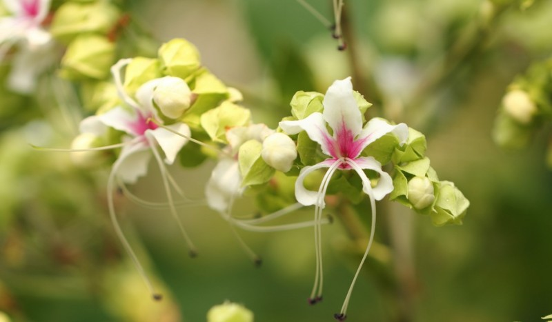
ชื่ออื่นๆ :
ปิ้งหลาง, ปิ้งขาว, ปิ้งเห็บ (ภาคเหนือ), ขี้ขม (ภาคใต้), ซมซี่, กุ้มคือ (สุโขทัย)
ชื่อวิทยาศาสตร์ :
Clerodendrum viscosum Vent
ลักษณะทางพฤกษศาสตร์
นางแย้งป่าจัดเป็นไม้พุ่มขนาดย่อม มีความสูงของต้นประมาณ 0.5-4 เมตร ลำต้นตั้งเป็นสันสี่เหลี่ยมตรงแต่ไม่มีขนปกคลุม กิ่งอ่อน และต้นเปราะ ตามลำต้น ลักษณะของใบเป็นรูปไข่กว้าง
หรือ รูปหัวใจ ปลายใบสอบแหลม แผ่นใบแข็งเป็นสีเขียวเข้ม มีขนสากระคายมือ มองเห็นเส้นใบได้ชัดเจน ดอกออกเป็นช่อบริเวณปลายกิ่ง โดยดอกจะรวมกลุ่มกันเป็นช่อแน่นตั้งตรง ในแต่ละช่อดอกจะยาวประมาณ 12-15 เซนติเมตร
ผลอ่อนเป็นสีเขียว ผิวผลมัน เมื่อสุกแล้วจะเปลี่ยนเป็นสีน้ำเงินเข้ม และจะดำ ผลมีกลีบเลี้ยงสีแดงยาว
2-2.5 เซนติเมตรหุ้มอยู่ ภายในผลมีเมล็ด 1 เมล็ด
สรรพคุณ
ใช้แก้ลำไส้อักเสบ ไตพิการ ขับปัสสาวะ แก้ไข้ ขับระดูในสตรี แก้ปวดข้อ แก้เหน็บชา โดยใช้รากแห้งมาต้มกับน้ำดื่มใช้แก้ปวดเอว ปวดข้อ แก้กระดูกสันหลังอักเสบ โดยใช้ส่วนต่างๆ ทั้งต้นมาตากให้แห้งแล้วนำมาต้มกับน้ำดื่ม
ใช้แก้เริม งูสวัด โดยใช้รากมาฝนแล้วผสมกับน้ำปูนใสใช้ทาบริเวณที่เป็น ใช้รักษาโรคผิวหนังต่างๆ โดยใช้ใบสดตำพอกบริเวณที่เป็น แก้อาการปวดหัวข้างเดียว
14. ปลาไหลเผือก
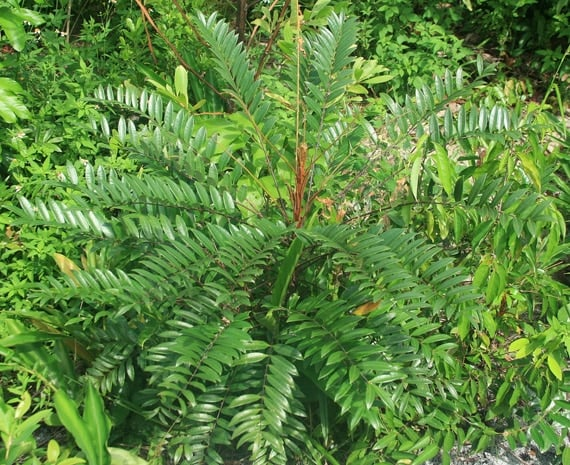
ชื่อสมุนไพร :
ปลาไหลเผือก
ชื่ออื่นๆ :
กรุงบาดาล (สุราษฎร์ธานี) คะนาง,ชะนาง (ตราด) ตรึงบาดาล (ปัตตานี) ตุงสอ, แฮพันชั้น (ภาคเหนือ)
ชื่อวิทยาศาสตร์ :
Eurycoma longifolia Jack
ลักษณะทางพฤกษศาสตร์
ไม้พุ่มหรือไม้ต้นขนาดเล็ก ลำต้นตั้งตรง สูง 1-10 เมตร เปลือกสีน้ำตาล เป็นไม้ลงราก รากกลมโตสีขาวยาว กิ่งอ่อนมีขนสีน้ำตาล ใบประกอบแบบขนนกปลายคี่ เรียงเวียน ใบประกอบยาวได้กว่า 35 เซนติเมตร
ใบย่อย 8-13 คู่ เรียงตรงข้ามหรือเกือบตรงข้าม ดอกช่อแบบแยกแขนง ออกเป็นกระจุกที่ปลายกิ่ง และซอกใบ เป็นช่อพวงใหญ่ ยาวได้ถึง 30 เซนติเมตร ผลทรงกลม เป็นพวง มีประมาณ 5 ผลย่อย ทรงรีหรือรูปไข่ กว้าง 8-12 มิลลิเมตร ยาว 1-2 เซนติเมตร
ผนังผลชั้นในแข็ง
สรรพคุณ
ยาสมุนไพรพื้นบ้านจังหวัดอุบลราชธานี ใช้ ราก ต้มน้ำดื่ม แก้ไข้ ฝนน้ำดื่ม แก้ปวดท้อง ราก นำไปเข้ายาบำรุงกำลัง นำรากผสมกับรากโลดทะนงแดง และพญาไฟ ฝนน้ำดื่ม แก้ไข้ ใช้เลิกเหล้า
ราก รสขม เบื่อเมาเล็กน้อย ถ่ายพิษต่างๆ ถ่ายฝีในท้อง ถ่ายพิษไข้พิษเสมหะ และโลหิต แก้ไข้ แก้ไข้มาลาเรีย ตัดไข้ทุกชนิด แก้ลม แก้วัณโรคระยะบวม ขับเหงื่อ ขับพยาธิ แก้ต่อมทอนซิลอักเสบ
15. พังคี
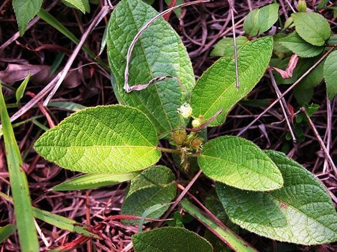
ชื่ออื่นๆ :
พังคี ปังคี พังคีน้อย
ชื่อวิทยาศาสตร์ :
Croton crassifolius Geiseler
ลักษณะทางพฤกษศาสตร์
ไม้พุ่มขนาดเล็ก สูงประมาณ 20-40 เซนติเมตร มีรากขนาดใหญ่ใต้ดิน เปลือกรากหลุดออกง่าย มีกลิ่นหอม ใบเดี่ยวเรียงสลับ รูปวงรีหรือรูปไข่แกมรูปหอก กว้าง 3-5 เซนติเมตร ยาว 6-10 เซนติเมตร
โคนใบมน ปลายใบแหลม ขอบใบเรียบ ก้านใบและดอกช่อมีขนปกคลุมทั้งต้น ดอกออกเป็นช่อ ออกที่ปลายกิ่งหรือยอด ดอกแยกเพศอยู่ในช่อดอกเดียวกัน กลีบดอกสีขาวนวล หรือสีเหลืองอ่อน ลแห้ง แตกได้ รูปทรงกลม
ขนาด 1 ซม. มี 3 พู ปกคลุมด้วยขนสีสนิมเหล็กหนาแน่น เมล็ดกลมแกมรี กว้าง 3-4 มม. ยาว 7-8 มม.
สรรพคุณ
ตำรายาไทย ใช้ ราก ซึ่งมีรสเผ็ด ขื่น เฝื่อนเล็กน้อย และมีกลิ่นหอม แก้ท้องขึ้น ปวดแน่นท้อง หรือใช้ภายนอกโดยฝนกับน้ำปูนใส ผสมกับมหาหิงคุ์และการบูรทาท้องเด็กอ่อน ทำให้ผายลม แก้ท้องอืดเฟ้อ
แก้ปวดท้อง ราก ผสมกับรากส่องฟ้าดง ต้มน้ำดื่ม แก้จุกเสียด แก้ท้องอืด ผสมกับสมุนไพรอื่นอีก 34 ชนิด ต้มน้ำดื่ม แก้ไข้
16. มะคังแดง
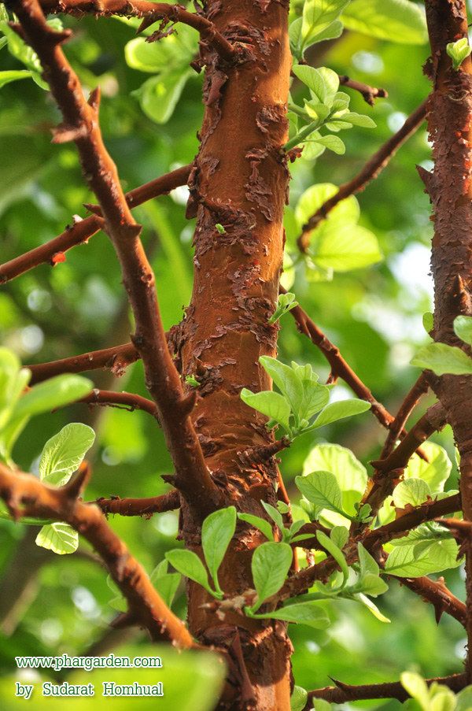
ชื่ออื่นๆ :
จงก่าขาว ตะลุมพุกแดง (กาญจนบุรี) จิ้งก่าขาว ชันยอด (ราชบุรี) ตุมกาแดง (กลาง)
ชื่อวิทยาศาสตร์ :
Gardenia erythroclada Kurz
ลักษณะทางพฤกษศาสตร์
ไม้ยืนต้น กึ่งไม้พุ่ม ขนาดกลาง สูง 6-12 เมตร ใบดกหนาทึบ ลำต้นและกิ่งก้านสีน้ำตาลแดง มีขนนุ่มๆเหมือนกำมะหยี่สีน้ำตาลแดงปกคลุมทั่วไป โคนต้นและกิ่งมีหนามโดยรอบ หนามขนาดใหญ่
พุ่งตรงออกเป็นระยะ ใบเดี่ยว เรียงตรงข้าม รูปวงรีหรือรูปไข่กลับ กว้าง 8-15 เซนติเมตร ยาว 15-22 เซนติเมตร ผิวใบมีขนทั้งสองด้าน ดอกช่อขนาดเล็กออกเป็นช่อสั้น ที่ซอกใบใกล้ปลายกิ่ง ดอกย่อยสีเขียวอ่อน กลีบดอกมี 5 กลีบ
โคนกลีบดอกติดกัน กลีบดอกรูปกลม เกสรตัวผู้เป็นเส้นติดกับกลีบดอกวางสับหว่างกลีบดอก ผลสด รูปกระสวย มีสันนูนจำนวน 5-6 สัน ผิวเรียบ ปลายผลมีกลีบเลี้ยงติดอยู่
สรรพคุณ
ยาพื้นบ้าน ใช้ ต้น ต้มน้ำดื่ม แก้เลือดลมเดินไม่สะดวก ผสมกับหัวยาข้าวเย็น ต้มน้ำดื่มแก้ไตพิการ (โรคเกี่ยวกับทางเดินปัสสาวะ มีปัสสาวะขุ่นข้น เหลืองหรือแดง มักมีอาการแน่นท้อง กินอาหารไม่ได้) แก้ปวดท้อง
ขับพิษโลหิต และน้ำเหลือง เปลือกต้น ตำพอกแผลสด ห้ามเลือด ราก เป็นยาถ่าย
17. สะค้าน
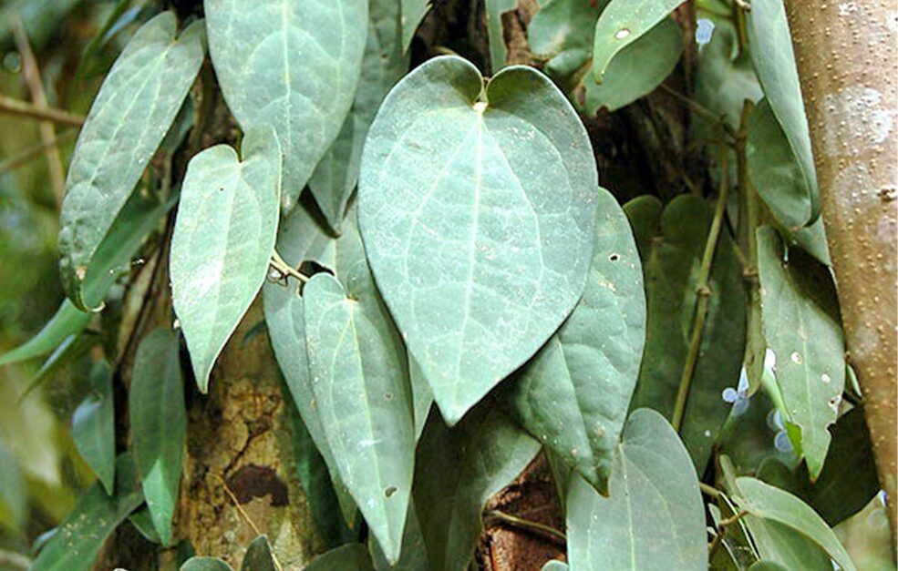
ชื่ออื่นๆ :
ตะค้านเล็ก , ตะค้านหยวก , จะค่าน , จั๊กค่าน , หนาม , มังเหาเจ๊าะ
ชื่อวิทยาศาสตร์ :
Piper ribesoides Wall
ลักษณะทางพฤกษศาสตร์
ไม้เถาเลื้อย ลำต้นอวบอ้วนขนาดใหญ่ ทุกส่วนเกลี้ยง รูปทรงและขนาดของใบพบได้หลากหลาย เนื้อใบเหนียวและหนามาก ใบบนลำต้นมีขนาดเล็กกว่ามาก ส่วนใหญ่แผ่นใบรูปสามเหลี่ยมแคบโดยเรียวไปทางปลายใบ หรือรูปไข่แคบ
ฐานใบเว้าลึกพูมน สมมาตรหรือไม่สมมาตร ปลายใบแหลม ใบบนกิ่งแผ่นใบรูปรี ฐานใบเว้ารูปหัวใจ ปลายใบแหลมหรือเรียวแหลม แผ่นใบทั้งสองแบบขนาด 5-11.5 x 8-22 ซม. เส้นใบมีจำนวน 9 เส้น มี 3 คู่ออกจากฐานใบ เส้นอื่นๆ ออกจากเส้นกลางใบเหนือฐานใบ 2-3 ซม.
ช่อดอกเพศผู้ห้อยลง ขนาด 0.1-0.2 x 5-8 ซม. ก้านช่อดอกยาว 0.5-0.8 ซม. ใบประดับมีก้าน เกสรเพศผู้ 4 อัน ช่อผลยาว 2-18 ซม. ผลกลม เส้นผ่าศูนย์กลาง 0.3-0.6 ซม. เมื่อแก่มีสีเขียวแกมเหลือง เมื่อสุกมีสีแดง ก้านผลยาว 0.5-0.6 ซม
สรรพคุณ
ตำรายาไทย เถา รสเผ็ดร้อน ขับลมในลำไส้ แก้แน่น แก้จุกเสียด บำรุงธาตุ ทำให้ผายเรอ และใช้ปรุงยาธาตุ แก้ธาตุพิการ เป็นตัวยาประจำธาตุลม บัญชียาจากสมุนไพร: ที่มีการใช้ตามองค์ความรู้ดั้งเดิม ตามประกาศคณะกรรมการพัฒนาระบบยาแห่งชาติ ในบัญชียาหลักแห่งชาติ ระบุการใช้สะค้านในตำรับ “ยาเบญจกูล” มีส่วนประกอบของเถาสะค้านร่วมกับสมุนไพรชนิดอื่นๆ ในตำรับ มีสรรพคุณบรรเทาอาการท้องอืด ท้องเฟ้อ บำรุงธาตุ แก้ธาตุให้ปกติ
18. สารภีป่า
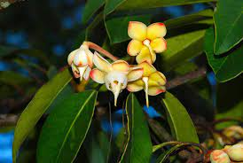
ชื่ออื่นๆ :
คำโซ่ ตองหนัง ตีนจำ ทำซุง บานมา พระราม โมงนั่ง (อีสาน) สารภีหมู (เหนือ)
ชื่อวิทยาศาสตร์ :
Anneslea fragrans Wall
ลักษณะทางพฤกษศาสตร์
ไม้ยืนต้นขนาดเล็กถึงขนาดกลาง ไม่ผลัดใบ สูงถึง 25 เมตร ลำต้นคดงอ แตกกิ่งต่ำ เปลือกต้นเรียบหรือแตกเป็นร่องตื้นไม่เป็นระเบียบ ใบเดี่ยว เรียงเวียน กว้าง 2.5-5.5 เซนติเมตร ยาว 6-15 เซนติเมตร มักจะพบหนาแน่นที่ปลายกิ่ง ใบสีเขียวเข้ม
แผ่นใบหนาคล้ายแผ่นหนัง ผิวเรียบและเป็นมัน ลักษณะมนรีแคบ ดอกเดี่ยว ขนาด 3-4 เซนติเมตร ออกเป็นกลุ่มใกล้ปลายกิ่ง ชี้ลงดิน มีดอกจำนวนมาก ก้านดอกยาว 3-5 เซนติเมตร กลีบเลี้ยงมี 5 กลีบ สีเหลืองแกมชมพู ขนาด 1-1.5 เซนติเมตร
ผลค่อนข้างกลม รูประฆัง ผิวเรียบ มีเนื้อหนา คล้ายหนัง ยาว 1.5-5 เซนติเมตร มีกลีบเลี้ยงติดคงทนสีแดงส้ม ส่วนนี้จะแข็งคล้ายไม้
สรรพคุณ
ตำรายาไทย เปลือก และดอก ใช้ถ่ายพยาธิ แก้บิด และแก้ไข้ ตำรายาพื้นบ้านล้านนา ทั้งต้น ผสมสมุนไพรจำพวกประดง รวม 9 ชนิด ต้มน้ำดื่มรักษาโรคประดง
19. อบเชยไทย
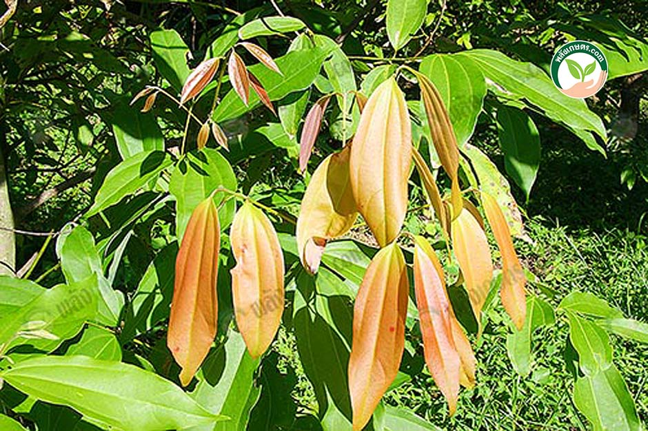
ชื่ออื่นๆ :
อบเชยต้น มหาปราบ เซียด ฝักดาบ พญาปราบ ฮักแกง สุรามริด โมง โมงหอม เคียด กะทังหัน
ชื่อวิทยาศาสตร์ :
Cinnamomum spp
ลักษณะทางพฤกษศาสตร์
ไม้ยืนต้นขนาดกลางถึงขนาดใหญ่ มีความสูงของต้นประมาณ 15-20 เมตร ใบเดี่ยวออกตรงข้ามหรือเยื้องกันเล็กน้อย ใบรูปขอบขนาน แผ่นใบหนา เกลี้ยง แข็ง และกรอบ
เส้นใบออกจากโคนมี 3 เส้น ยาวตลอดจนถึงปลายใบ ด้านล่างเป็นคราบขาว ก้านใบยาวประมาณ 0.5 เซนติเมตร ออกดอกเป็นช่อแบบกระจายที่ปลายกิ่ง ยาวประมาณ 10-25 เซนติเมตร ดอกมีกลิ่นเหม็น
ดอกมีขนาดเล็กสีเหลืองอ่อนหรือสีเขียวอ่อน ผลมีขนาดเล็ก ลักษณะของผลเป็นรูปขอบขนาน ยาวประมาณ 1 เซนติเมตร ผลแข็ง ตามผิวผลมีคราบขาว แต่ละมีเมล็ดเดียว ฐานรองรับผลมีลักษณะเป็นรูปถ้วย
สรรพคุณ
เปลือก บำรุงดวงจิต แก้อ่อนเพลีย ชูกำลัง ขับผายลม บำรุงธาตุ แก้บิด แก้ไข้สันนิบาต รากและใบ ต้มดื่มแก้ไข้จากการอักเสบหลังคลอด เป็นยาขับลม บำรุงธาตุ แก้ท้องอืดเฟ้อ
20. เฉียงพร้านางแอ
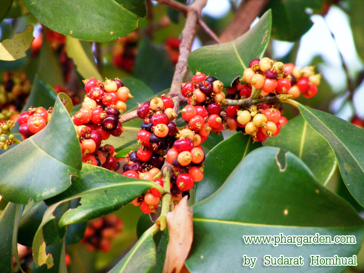
ชื่อสมุนไพร :
เฉียงพร้านางแอ
ชื่ออื่นๆ :
สีฟันนางแอ (เหนือ), นกข่อ, ส้มป้อง (เชียงใหม่), บงคด (พร), โองนั่ง (อุตรดิตถ์), แก็ก, วงคด,
องคต (ลำปาง),แคแห้ง, ต่อไส้, สันพร้านางแอ (กลาง)
ชื่อวิทยาศาสตร์ :
Carallia brachiata (Lour.) Merr
ชื่อวงศ์ :
Rhizophoraceae
ลักษณะทางพฤกษศาสตร์
ไม้ยืนต้นขนาดกลางถึงขนาดใหญ่ สูง 25-30 เมตร ไม่ผลัดใบ ลำต้นตั้งตรง เรือนยอดทรงพุ่มรูปกรวยกว้างทึบ เปลือกสีน้ำตาลอมแดงถึงน้ำตาลอมเทา ใบเดี่ยว เรียงตรงข้ามสลับตั้งฉาก
รูปวงรีแกมรูปขอบขนาน กว้าง 4-7 เซนติเมตร ยาว 7-10 เซนติเมตร หลังใบสีเขียวเข้ม เป็นมันหนา ดอกช่อแยกแขนง ออกที่ซอกใบหรือปลายกิ่ง แตกแขนงเป็น 4 กิ่ง ดอกย่อยจำนวนมากขนาดเล็ก มักเรียงตัวแน่นเป็นช่อกลม
ผลสดแบบมีเนื้อ รูปทรงกลม ขนาดเล็ก ออกเป็นกระจุก เส้นผ่านศูนย์กลาง 0.5-1 เซนติเมตร มีกลีบเลี้ยงด้านบน คล้ายมงกุฎ เมล็ดรูปไตสีน้ำตาลเข้มหรือดำ มีเยื่อหนาสีส้ม รับประทานได้
สรรพคุณ
ตำรายาไทยใช้ เปลือกต้น รสฝาดเย็น แก้ไข้ แก้ร้อนในกระหายน้ำ ขับเสมหะ และโลหิต ปิดธาตุ สมานแผล แก้บิด แก้พิษผิดสำแดง ต้น แก้ไข้ บำรุงร่างกาย และช่วยเจริญอาหาร
21. เถาเอ็นอ่อน
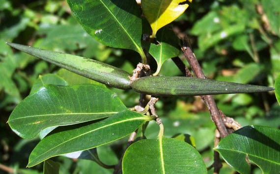
ชื่อสมุนไพร :
เถาเอ็นอ่อน
ชื่ออื่นๆ :
ตีนเป็ดเครือ เครือเจน เครือเถาเอ็น เมื่อย หมอนตีนเป็ด หญ้าลิเลน
ชื่อวิทยาศาสตร์ :
Cryptolepis buchanani Roem. & Schult
ชื่อวงศ์ :
Asclepiadaceae
ลักษณะทางพฤกษศาสตร์
ต้นเถาเอ็นอ่อน จัดเป็นไม้เถาเลื้อยพาดพันกับต้นไม้อื่น เป็นไม้เลื้อยจำพวกเถาเนื้อแข็ง เถาลำต้นกลม ใบเป็นใบเดี่ยว ออกเรียงตรงข้ามกัน ลักษณะของใบเป็นรูปรีหรือรูปไข่ ปลายใบมนมีหางสั้น
โคนใบสอบ ส่วนขอบใบเรียบ ใบมีขนาดกว้างประมาณ 3-8 เซนติเมตร ออกดอกเป็นช่อตามซอกใบ ดอกย่อยเป็นสีเหลืองอ่อนหรือสีเป็นสีขาวอมเหลือง ดอกมีกลีบดอก 5 กลีบ ออกผลเป็นฝัก ลักษณะของฝักเป็นรูปทรงกระสวย
กลมยาว ยาวประมาณ 6.5-10 เซนติเมตร และมีขนาดเส้นผ่านศูนย์กลางฝักประมาณ 1-2 เซนติเมตร ฝักมีเนื้อแข็ง
สรรพคุณ
ตำรายาไทยใช้ เถา ต้มดื่มบำรุงเส้นเอ็นให้แข็งแรง แก้เส้นเอ็นพิการ เส้นแข็ง แก้ปวดเมื่อยเส้นเอ็น แก้ขัดยอก ทำให้คลายการตึงตัว
เป็นสมุนไพรที่มีการนำมาใช้ในสูตรยาอบสมุนไพรเพื่อสุขภาพ โดยใช้เป็นส่วนประกอบเพิ่มเติมจากสูตรยาอบสมุนไพรหลัก เมื่อต้องการอบเพื่อรักษาอาการปวดเมื่อย ปวดหลัง ปวดเอว เป็นต้น
22. เปราะหอม
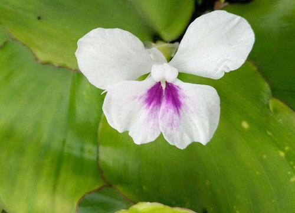
ชื่ออื่นๆ :
ว่านหอม ว่านตีนดิน ว่านแผ่นดินเย็น หอมเปราะ เปราะหอมขาว
ชื่อวิทยาศาสตร์ :
Kaempferia galanga L
ลักษณะทางพฤกษศาสตร์
เปราะหอม มีลำต้นใต้ดินประเภทไรโซม (Rhizome) ลักษณะเป็นเหง้าแง่งกลมรูปไข่สีเหลืองอ่อนมีเยื่อบาง ๆ รูปสามเหลี่ยมหุ้มโคน เหง้าแก่สีน้ำตาล ใบเป็นใบเดี่ยว
แทงขึ้นมาจากหัวหรือเหง้าใต้ดินประมาณ 2-3 ใบ โดยใบอ่อนมีลักษณะม้วนเป็นกระบอกออกมาแล้วค่อยแผ่ราบบนหน้าดิน ลักษณะของใบเป็นรูปค่อนข้างกลมหรือเป็นรูปไข่ป้อม ดอกออกเป็นช่อ
ซึ่งดอกตรงกลางระหว่างใบ โดยมีดอกย่อยได้ตั้งแต่ 6-10 ดอก แต่ดอกจะทยอยบานครั้งละ 1-2 ดอก ดอกมีความยาวประมาณ 2-4 เซนติเมตร ผลเป็นแบบผลแห้งแตกได้ ภายในมีเมล็ดกลม 12 เมล็ด
สรรพคุณ
ตำรายาไทย หัวใต้ดิน รสเผ็ดขม สุมศรีษะเด็ก แก้หวัดคัดจมูก รับประทานขับลมในลำไส้ แก้เสมหะ เจริญไฟธาตุ แก้ลงท้อง แก้โลหิตซึ่งเจือด้วยลมพิษ บรรเทาอาการท้องอืดเฟ้อ และอาการอุจจาระธาตุพิการ ท้องเสียที่ไม่ติดเชื้อ
บรรเทาอาการไข้ ร้อนในกระหายน้ำ แก้พิษหัด พิษอีสุกอีใส